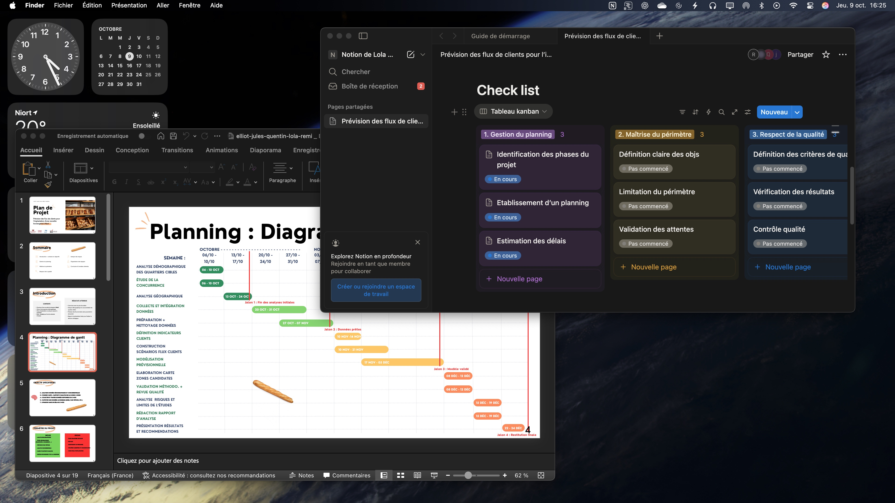

L’objectif de ce travail était de prévoir les flux de clients pour l’implantation d’une nouvelle boulangerie afin d’optimiser la planification des ressources, la gestion des stocks et le positionnement stratégique du site.
Notre organisation s'est appuyée sur cinq points essentiels : La gestion du planning, la maîtrise du périmètre, le respect de la qualité, l'analyse des risques et l'organisation des rôles au sein de l'équipe. Nous avons utilisé Notion pour centraliser les informations, suivre l'avancement des tâches et collaborer efficacement. Canva a été employé pour créer des visuels clairs et professionnels afin de présenter notre plan d'action.
J'ai acquis des compétences en gestion de projet, en planification stratégique et en utilisation d'outils de collaboration tels que Notion et Canva. J'ai également développé ma capacité à travailler en équipe et à communiquer efficacement mes idées.
Notre travail nous a valu la note de 19,5/20.